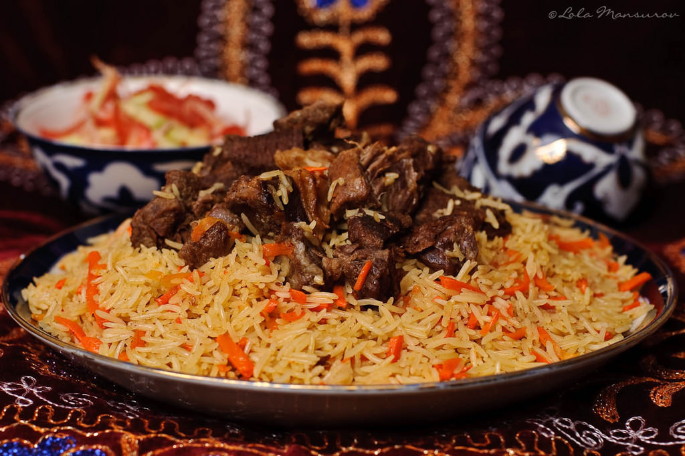

Plov

Authentic Uzbek Plov: A Culinary Journey Through Central Asia
Plov is the crown jewel of Uzbek cuisine, a delicious rice dish that beautifully showcases the country's culinary heritage. At its core, plov consists of tender portions of lamb or beef simmered with aromatic yellow rice, generously spiced with cumin, coriander, and peppers. This iconic dish celebrates the bounty of Central Asia with the additions of crisp julienned carrots, garlic, and whole spices like cloves.
Preparing plov is an art form, as layers of rice, meat, and vegetables are carefully assembled and slowly cooked over low heat, allowing the flavors to meld harmoniously.
The result is an utterly comforting dish, with each forkful delivering a myriad of textures and zests that tantalize the taste buds.
Plov is a meal steeped in tradition, meant to be shared amongst family and friends.
Ingredients
- 2 cups basmati rice
- 4 heads garlic, whole
- ½ cup vegetable oil
- 2 pounds boneless leg of lamb, cut into 3-inch pieces
- 2 large onions, thinly sliced
- 5 large carrots, coarsely grated
- 2 tablespoons cumin seeds
- 2 tablespoons coriander seed
- ½ cup fresh barberries
- 1 teaspoon whole back peppercorns
- 2 cups boiling water to cover
- 2 tablespoons salt
Steps
- Gather the ingredients
- Prepare the meat:
Season the meat cubes with salt, pepper, and spices.
Heat oil or ghee in a large pot or Dutch oven.
Brown the meat on all sides until nicely seared.
Remove the meat from the pot and set aside.
- Cook the aromatic vegetables:
In the same pot, sauté the onions until translucent.
Add the garlic and sauté for another minute.
Add the julienned carrots and sauté for 2-3 minutes.
- Assemble the plov:
Return the browned meat to the pot.
Add the rinsed rice, spreading it evenly over the meat and vegetables.
Add warm water or broth, just enough to cover the rice by about an inch.
Season with salt, pepper, and any remaining spices.
Add the whole spices (cloves, cardamom pods, bay leaves).
Cover the pot with a tight-fitting lid.
- Cook the plov:
Bring the pot to a boil over high heat.
Once boiling, reduce the heat to low and simmer for 20-25 minutes.
Remove the pot from heat and let it stand, covered, for an additional 10-15 minutes.
- Fluff and serve:
Uncover the pot and fluff the plov with a fork, incorporating the meat and vegetables.
Transfer the plov to a serving platter.
Garnish with fresh herbs, if desired.
Serve hot, and enjoy this traditional Uzbek delicacy!